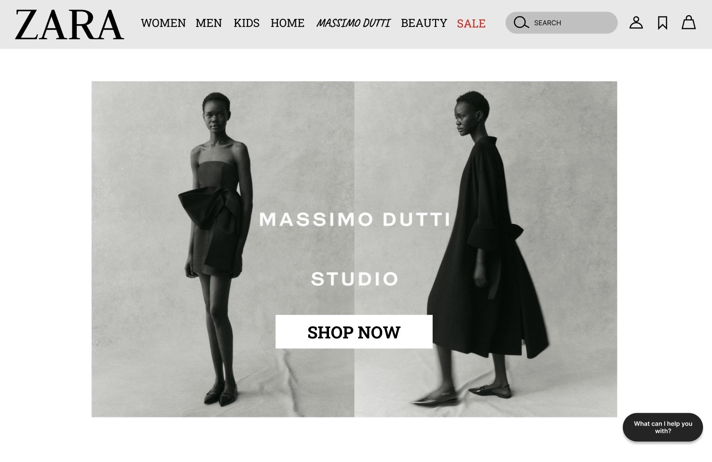
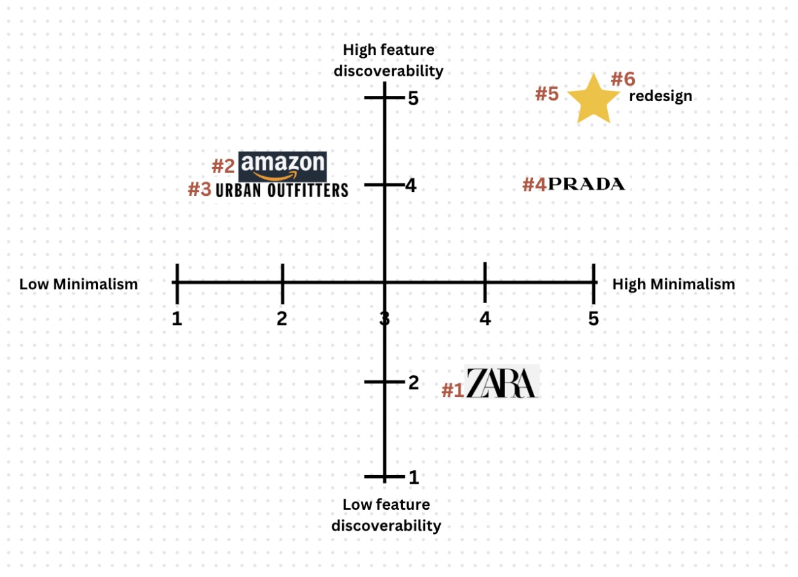
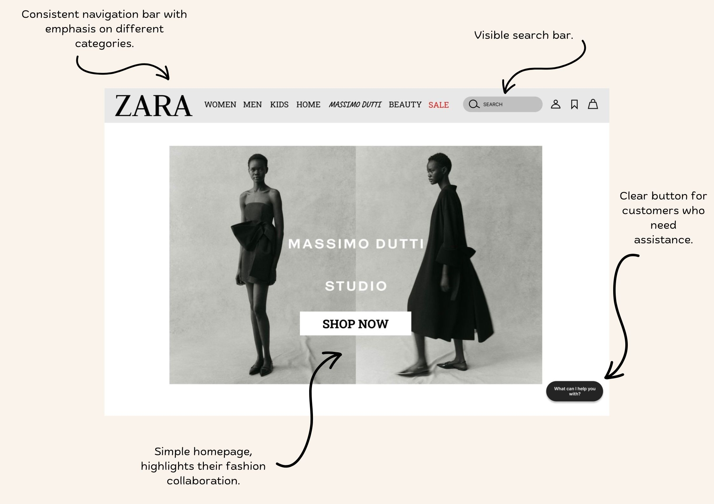
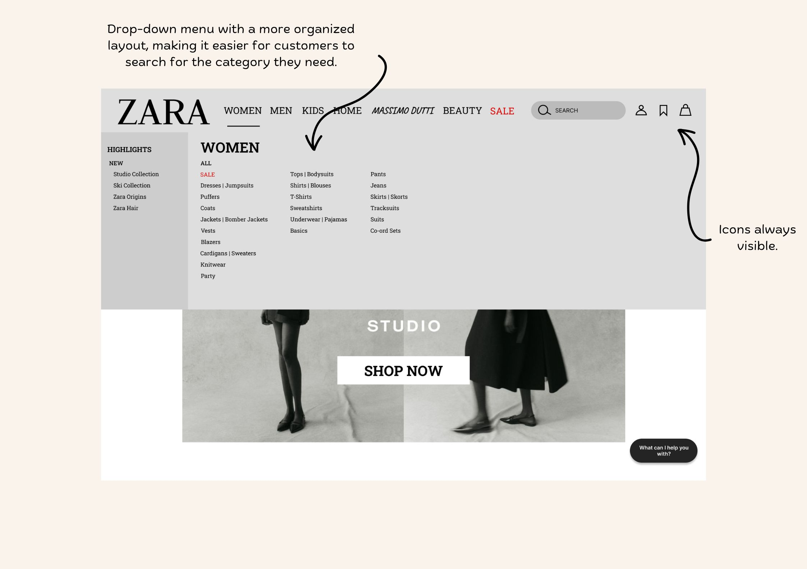
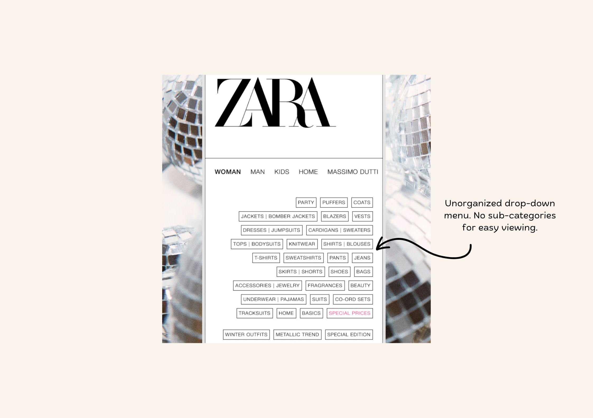
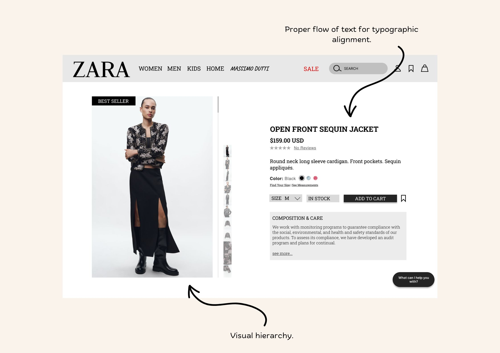
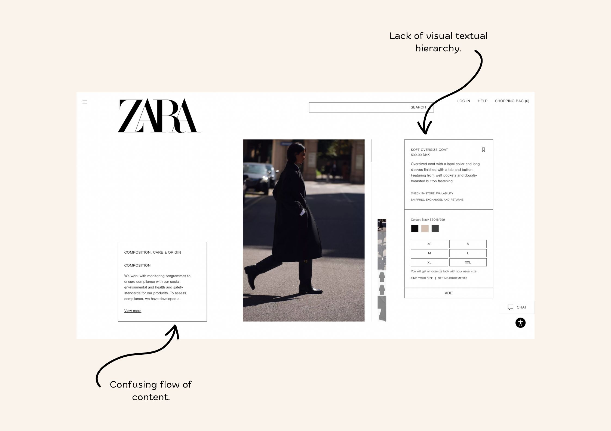

ROLE
Designer
UX Researcher
TIMELINE
10 Weeks
Sept '23 - Dec '23
TEAM
5 Team Members
SKILLS
Design Space
User Research
OVERVIEW
Problem
Users often face difficulties and encounter errors when navigating Zara's website. The original state of the website has an overwhelming interface design and chooses aesthetics over functionality. This could negatively impact sales and brand reputation as users feel less inclined to use their website.
Our Objective
We aimed to redesign Zara's retail website to best fit the targeted users, balancing both functionality and brand identity visuals.
METHODOLOGIES
User Data Collection
We began our process by conducting in-person interviews to gauge user preferences and find respondant demographics. Using the master-apprentice model was helpful to guide questions for navigating through the website. This is what we found through our data:
7/15 users aimlessly scrolled to look for the return policy.
9/15 users had a hard time reading the text due to the font sizes. They found it especially hard to find the search bar.
8/15 users found the menu difficult to read.
Some common rule-based mistakes we found were:
• 8/15 users found the menu difficult to read.
• 9/15 users struggled to find the fragrance from the task given to them.
A common knowledge-based mistake we found was:
• 9/15 users complained about the excess amount of photos on the home page. Users were unsure if it was for aesthetic purposes or for advertisement.
DESIGN SPACE
1st Design Space
Our first design space we have created included some competing websites like Amazon, Urban Outfitters, and Prada.
The tradeoffs we focused on were feature discoverability vs minimalism rated on a scale from 1 to 5.
Our redesign ideally would reach a level of 5 for both minimalism and feature discoverability. In order to achieve this, we needed to keep in mind a neutral color scheme with a simple aesthetic along with features with larger, visible text in an organized format.

2nd Design Space
Our second design space's tradeoffs focused on accessibility vs. uniqueness on a scale from 1 to 5.
Our redesign ideally would reach a level of 5 for accessibility with an organized menu with subcategories and large, visible symbols & text. In terms of uniqueness, our design would fall at a 3 as it is similar to other shopping website formats, inherently making it easier for users to use because it matches user’s mental model.

Redesign
Moving forwords, our redesign targeted the issues of readability, functionality/accessibility, and organization. We achieved these goals through creating a consistent navigation bar, reducing the unnecessary elements on the homepage, and organizing the drop-down menu for easier viewing and access. Below assess the comparisons we made between Zara's initial webpage design and ours:
Our Design:
Their Design:






Inspiration and Ideas
After researching different shopping websites, our ideas and inspiration stemmed the most from websites like Prada and Weekday.
MOVING FORWARD
Next Steps
Some action plans for the future would be to collect additional user testing, improving organization of categories, improving guest log-ins, and adapting a mobile view.
What I've learned
Some takeaways I would like to highlight would be the importance of proper testing and trade-offs. Asking the right questions/avoiding leading questions is crucial to understanding usability issues. Making an informed trade-off allows the balancing of different factors so the best outcome is achieved.